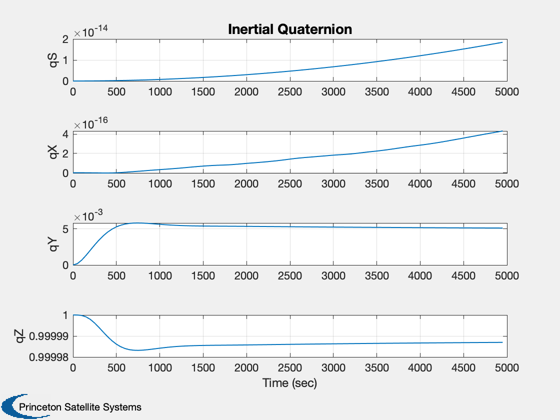
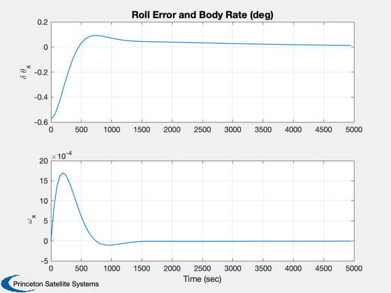
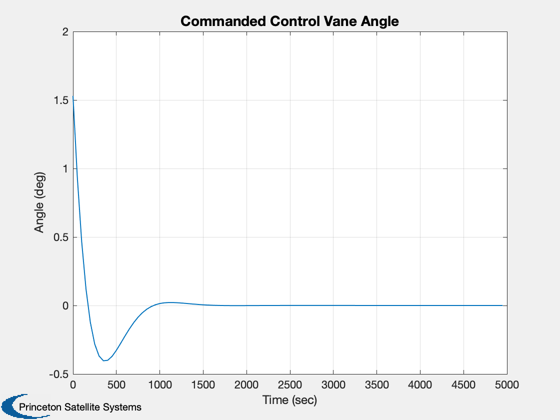
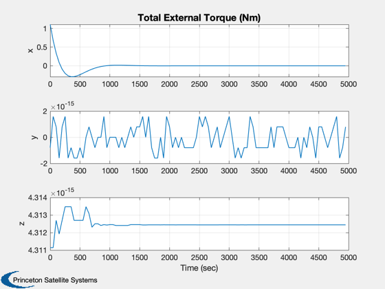
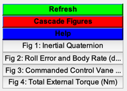

Attitude control of a sail using control vanes.
The attitude dynamics are rigid body. The vanes are assumed to reach
the commanded location instanteously and inertia effects are neglected.
Functions demonstrated:
PlateWithVanes
PIDMIMO
SailDisturbance
FRB
VaneAnglesSince version 7.
------------------------------------------------------------------------
See also AC, PIDMIMO, Eul2Q, Q2Eul, QMult, QPose, QZero, Constant,
Plot2D, RK4, Unit, JD2000, El2RV, FRB, VaneAngles, QSail,
DisturbanceStruct, EnvironmentStruct, ProfileStruct, SailDisturbance,
SailEnvironment
------------------------------------------------------------------------
Contents
rollStep = 0.01;
specular = 1;
pitch = 0;
clear SailDisturbance
First, create suitable CAD model.
g = load('PlateWithVanes');
lSail = 100;
if ~specular
optical = g.component(2).optical;
optical.sigmaS = 0.9;
optical.sigmaA = 0.08;
optical.sigmaD = 0.02;
for k = 1:3
g.component(k+1).optical = optical;
end
end
Second, design controller
xN = zeros(2,1);
iner = 1;
zeta = 2;
wn = 0.001;
tauInt = 3000;
omegaR = 5*wn;
sType = 'z';
dT = 50;
[aC, bC, cC, dC] = PIDMIMO( iner, zeta, wn, tauInt, omegaR, dT, sType );
areaVane = 0.05*lSail^2;
lBoom = lSail/sqrt(2);
Ps = 1367/Constant('speed of light')/1000;
Third, set up an attitude maneuver to simulate
[r,v] = El2RV( [Constant('au') 0 0 0 0 0], [], Constant('mu sun') );
jD = JD2000;
qS = QSail( -Unit(r), r, v );
if pitch
qY = Eul2Q([0;5*pi/180;30*pi/180]);
else
qY = QZero;
end
q0 = QMult(qS,qY);
x = [q0;zeros(3,1)];
rollCommand = rollStep;
d = struct;
d = EnvironmentStruct( d );
d = DisturbanceStruct( d );
d.aeroOn = 0;
d.albedoOn = 0;
d.magOn = 0;
d.radOn = 0;
p = ProfileStruct;
p.q = qS;
p.r = r;
p.v = v;
p.jD = jD;
p.body = [2 3];
p.angle = [0; 0];
p.axis = [0 0 1; 0 0 1]';
env = SailEnvironment( 'sun', p, d );
inr = g.mass.inertia;
invInr = inv(inr);
Fourth, simulate maneuver
nSim = 100;
xPlot = zeros(size(x,1),nSim);
tPlot = zeros(1,nSim);
aEPlot = zeros(1,nSim);
thPlot = zeros(1,nSim);
tqPlot = zeros(3,nSim);
for k = 1:nSim
qSB = QMult( QPose( qS ), x(1:4) );
eulActual = Q2Eul(qSB);
angleError = eulActual(1) - rollCommand;
yN = cC*xN + dC*angleError;
xN = aC*xN + bC*angleError;
Tcommand = -g.mass.inertia(1,1)*yN;
p.angle = VaneAngles( areaVane*cos(25*pi/180)*[1; 1], lBoom, Tcommand );
[f, tq] = SailDisturbance( g, p, env, d );
xPlot(:,k) = x;
tPlot(:,k) = (k-1)*dT;
aEPlot(:,k) = angleError;
thPlot(:,k) = p.angle(1);
tqPlot(:,k) = tq.total;
x = RK4( @FRB, x, dT, 0, inr, invInr, tq.total );
end
Plot
h = [];
h(1) = Plot2D( tPlot, xPlot(1:4,:), 'Time (sec)', {'qS','qX','qY','qZ'},'Inertial Quaternion' );
h(2) = Plot2D( tPlot, [aEPlot;xPlot(5,:)]*180/pi, 'Time (sec)', {'\delta \theta_x','\omega_x'},...
'Roll Error and Body Rate (deg)' );
h(3) = Plot2D( tPlot, thPlot*180/pi, 'Time (sec)', 'Angle (deg)', 'Commanded Control Vane Angle' );
Plot2D( tPlot, tqPlot*180/pi, 'Time (sec)', {'x','y','z'}, 'Total External Torque (Nm)' );
if 0
figure(h(3));
print -depsc2 VaneAngleV1Axis
figure(h(2));
print -depsc2 RollErrorsV1Axis
figure(h(1));
print -depsc2 QInertialV1Axis
end
Figui
    